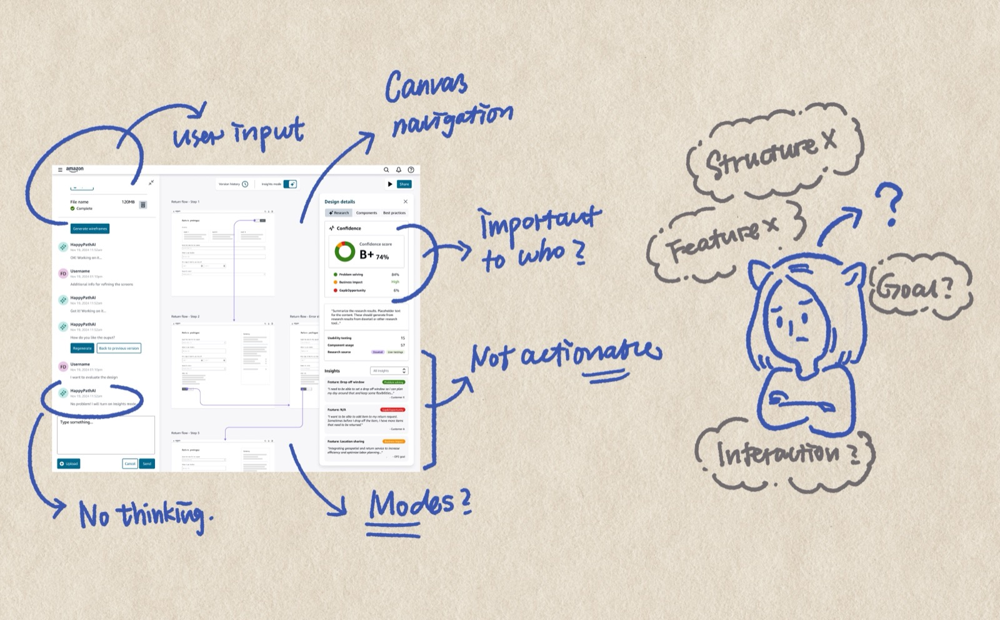

HappyPath → MiniPath
A project where the designer and the product grew together — built, taken apart, and rebuilt as the thinking deepened.
At Amazon, the ratio of UX designers to PMs averages about 1 to 5. That imbalance means designers spend a lot of time on simple prototype requests that could be handled faster. HappyPath started as a volunteer project with a clear goal: build an AI prototyping tool embedded with Amazon's internal design system so PMs could create quick prototypes for straightforward requests — freeing designers for more strategic work.
As the only UX designer on a volunteer team that worked intermittently, I delivered the end-to-end experience: prototype creation, evaluation insights, history and version control, generation from existing products. HappyPath beta launched in April 2025 and became the first AI prototyping tool for Amazon operations.

We had initial success, but reality caught up. Resources were constrained and implementation was slow. Meanwhile, the technology landscape was moving fast — tools emerging, paradigms shifting. We reached a point where we needed to stop and ask: what do we actually want to build, and does our current direction still make sense?
I went through every design decision I'd made — not defensively, but honestly. I pointed out gaps in my own thinking, places where my assumptions hadn't held up, directions where the technology had outgrown my original mental model. While others were ready to pick up where we left off, I made the case that the foundation needed rethinking.
This wasn't easy. It's one thing to critique someone else's work. It's another to stand in front of a team and say: here's what I got wrong, and here's why we shouldn't keep building on it.
A few things I challenged:
Instead of making PMs fill out forms before they could see a prototype, the tool should give them something immediately — then ask the right questions, surface evaluation, call out gaps and opportunities. Meet people where they are, not where we wish they were.
I also rethought how the evaluation system communicates. The original framing was educational — teaching people UX best practices. But behavioral psychology tells us loss aversion works better than education. Don't say "let me teach you UX best practices." Say "your current flow will cost you $50K in lost conversions." Make the stakes concrete.
And a harder question about our design system: Meridian doesn't have components for every use case. If the tool only generates what existing components can express, it's limiting the output to what the system already knows — not what users actually need. Is the tool creating good UX for users, or only UX that fits existing design components?
From the beginning, I saw HappyPath as two-sided. The general user comes in to generate prototypes — that's the visible side. But every prompt, every generation, every workaround is also a signal. What components are people reaching for that don't exist? Where does the design system fall short? What patterns keep emerging across teams?
My original idea (2024) was straightforward: track usage patterns and surface them in a dashboard for the design systems team. But the DS team would still have to manually decide what's worth adding, design the component from scratch, document it, and add it to the system. The signal was there, but the action gap was huge.
During the retro, I enhanced this into something more ambitious: a dynamic, context-aware design system. Instead of just reporting what's missing, the tool would detect emerging patterns, propose component specifications automatically, generate alternatives that meet the DS guidelines, and show confidence levels. The DS team would review, approve or refine — and approved patterns would feed back into the system.
Three layers: a core design system that's always enforced (tokens, foundational components), a contextual pattern layer for domain-specific patterns that AI can generate and validate for accessibility and brand compliance, and a community pattern layer where new AI-generated patterns get stored, promoted after repeated use, and reviewed by the DS team. The design system stops being a static library and starts growing with the organization.
There was another reason I felt the urgency to build something better. As more people started using AI prototyping tools, I noticed a quiet decline in quality. Not dramatic failures — just a steady drift toward 70–80% output. People were lowering their bar because they couldn't figure out how to push AI tools further. The unfamiliarity became a ceiling.
I recognized this pattern because I'd lived it. In college, my 3D modeling skills couldn't support my design ambitions — so I ended up designing what I could build in Rhino, not what I actually envisioned. The tool shaped the output. I watched the same thing happening with AI prototyping: people designing what the tool could produce, not what users needed.
That's what MiniPath is for. Not just fast prototyping, but fast prototyping that's also high quality and domain-relevant. A tool that packages proven best practices so people don't have to rediscover them, that understands the specific domain it's generating for, and that produces prototypes good enough to actually deliver — not just good enough to demo.
By this point, I wasn't just using AI to assist my design work — I was building things with it to test whether my ideas held up. One day, thinking about what HappyPath should become, I decided to just build it. I used Claude Code to create MiniPath from scratch: a fully functional local version that calls Claude Code CLI to generate prototypes.
MiniPath isn't just a redesign. It's a bundle of everything I learned — and everything my AI-driven coworkers learned — about how designers actually work with AI. The processes, the prototypes, the workflows we spent months exploring and refining — I packaged them into built-in features.
Click any component to isolate it into a floating sandbox window. Iterate on just that piece through scoped conversation. Changes merge back without regenerating the rest of the page. This came from watching how designers actually want to work — not describing changes in words and hoping, but pointing at a thing and saying "change this."
Before generating, MiniPath shows its plan — what it considered, what tradeoffs it weighed, what decisions shaped the output. You review and redirect before execution, not after. This came from a frustration I saw everywhere: AI as a black box that produces something and you either accept it or start over.
Four modes for the full prototype lifecycle: Exploration for divergent thinking, Working for focused building, Communication for stakeholder presentation, Artifact for final handoff. The prototype becomes the communication artifact — no separate slide decks or spec documents.
The redirection of HappyPath came from observation — watching how I use AI, how my teammates use AI, feeling people's excitement and their struggles. But building MiniPath surfaced a deeper problem I didn't expect: AI outputs converge toward sameness, especially under design system constraints. Every generation feels competent but familiar.
I started asking: what is "creation" actually? What is "innovation"? How do I build a tool that's deeply familiar with a specific domain — Amazon logistics and operations — while still enabling genuine creative exploration?
This thinking led to MiniPath's three-layer architecture:
I don't have a clean answer yet. But I think the question matters more than a premature conclusion. This project is a journal of me growing — not being afraid to question my own work, challenging myself to go deeper about what we actually want to create with these tools.